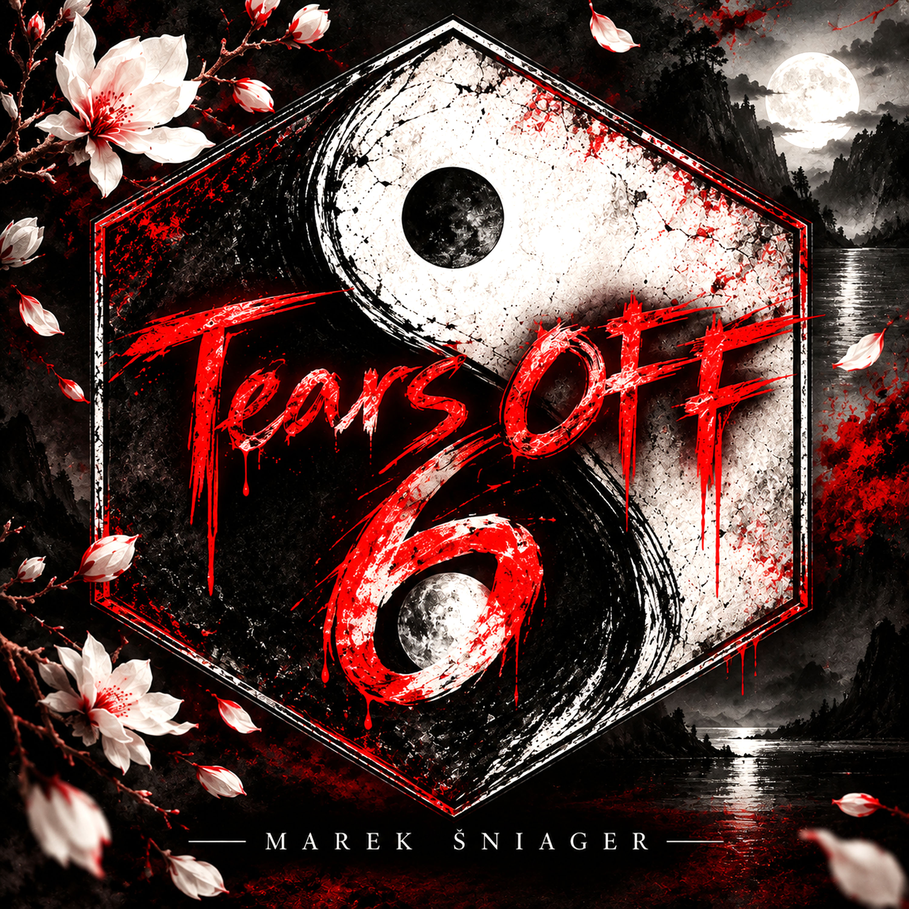

Album
SIX
Tears Off · Marek Šniager
- Release date
- ADD DATE
- Tracks
- 11
- Duration
- 43:36
- Created by
- Marek Šniager / Tears Off
The record
Tracklist
- 01All The Way
- 02Samsara Steps
- 03Anger Mountain
- 04Evidence Gives No Chance
- 05Inner Sun Will Shine Again
- 06What’s Yours is Mine
- 07You Did Duet Too
- 08Listen Silent
- 09Získaj Risk
- 10Luxury Death
- 11Breaking Point
About
Notes
Add a short description for album SIX here once the final release details are ready.
Listen
Streaming
Release links will be added when available.